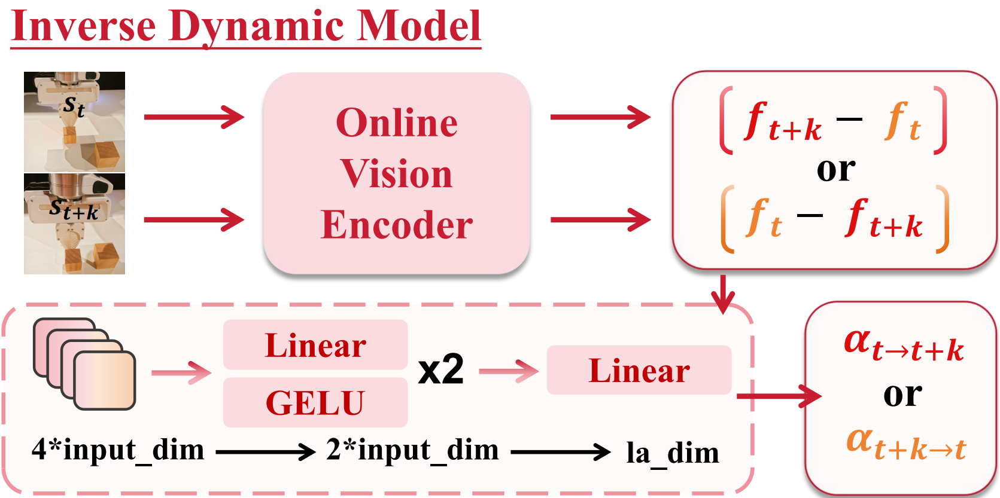
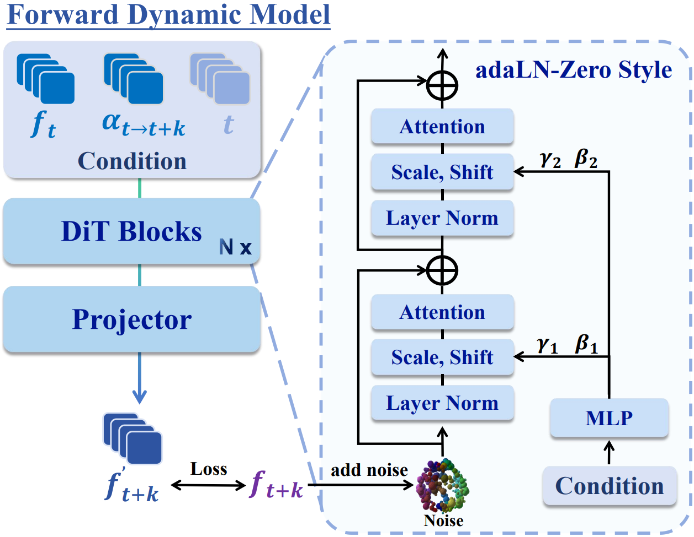
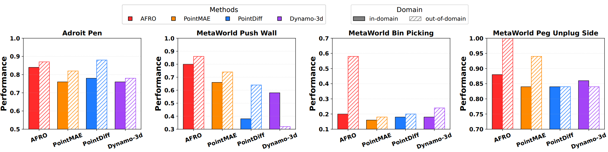
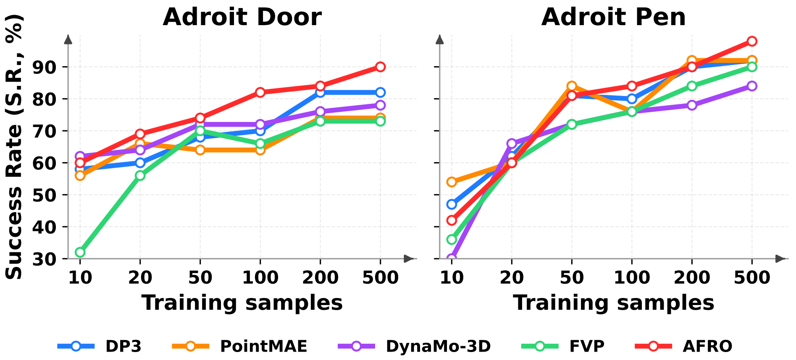
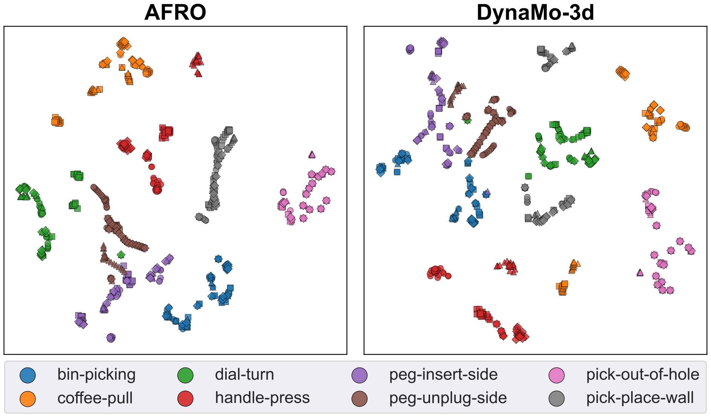
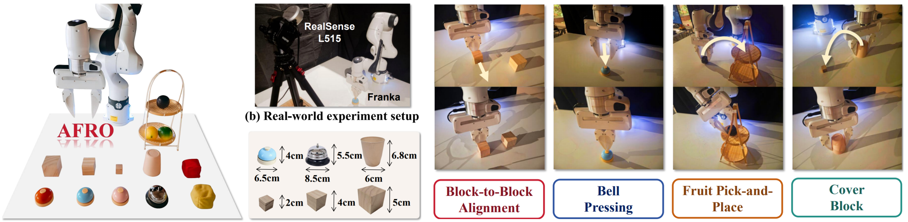
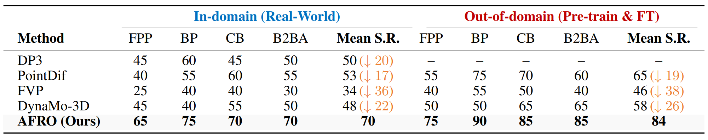
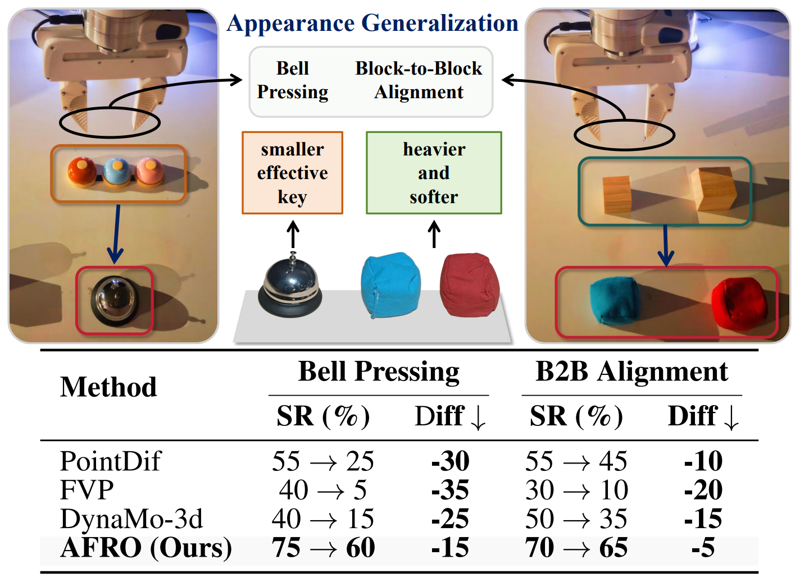
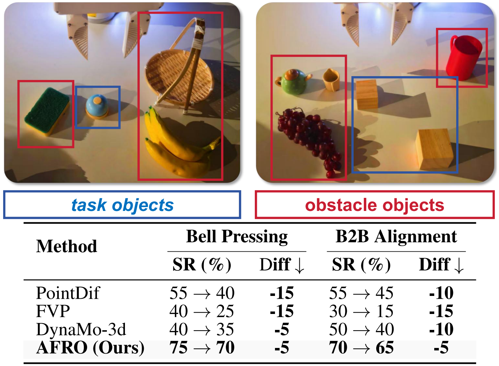
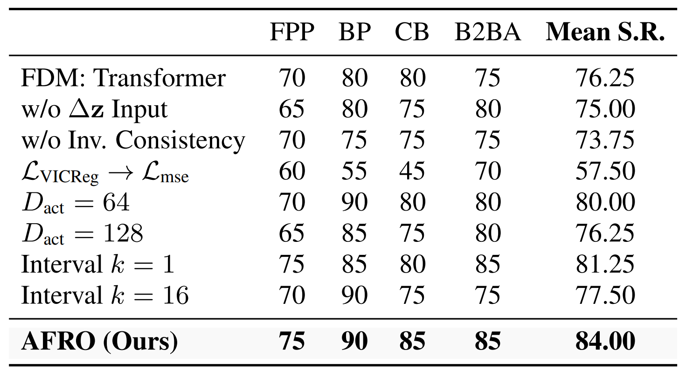

Figure 1: AFRO learns dynamics-aware 3D representations in latent space without action labels or explicit reconstruction, achieving superior performance and generalization.
Abstract
Despite strong results on recognition and segmentation, current 3D visual pre-training methods often underperform on robotic manipulation. We introduce AFRO, a self-supervised framework that learns dynamics-aware 3D representations without action or reconstruction supervision. AFRO casts state prediction as a generative diffusion process and jointly models forward and inverse dynamics in a shared latent space to capture causal transition structure. When combined with Diffusion Policy, AFRO substantially increases manipulation success rates across 16 simulated and 4 real-world tasks, outperforming existing pre-training approaches.
Motivation: Why Current 3D Pre-training Fails?
Lack of Dynamics Awareness
Robotic manipulation is inherently sequential. Existing methods often rely on single-frame supervision (like reconstruction or contrastive learning on static views), completely overlooking the temporal continuity and causal dependencies (State-Action-State) essential for control.
Lack of Manipulation-Relevant Abstraction
Current approaches often strive for holistic scene reconstruction. This forces the model to encode background details irrelevant to the task (e.g., table texture, distant walls), distracting the policy from actionable object regions and interaction dynamics.
Methodology

Figure 2: Overview of the AFRO framework. Our method learns dynamics-aware 3D representations by jointly modeling forward and inverse dynamics in a shared latent space, using feature differencing and diffusion-based state prediction.
AFRO addresses these gaps by learning dynamics-aware representations. We integrate Inverse and Forward Dynamics Models (IDM/FDM) in a latent space, utilizing feature differencing and a diffusion-based predictor.
1. Latent Action Modeling
To prevent feature leakage (shortcut learning), we input feature differences instead of raw feature pairs into the IDM. We also introduce Inverse-Consistency supervision to stabilize the learned dynamics.
Figure 3: Feature Differencing & Inverse Dynamics.
2. Diffusion Forward Dynamics
Since the future is multimodal (uncertain), we model forward prediction as a conditional denoising process using a Diffusion Transformer (DiT), rather than a deterministic regression.
Figure 4: Diffusion-based Forward Dynamics Model.
Simulation Experiments
1. Main Benchmark Results
Comparison on 16 tasks (Adroit & MetaWorld) against SOTA baselines (DP3, PointMAE, Dynamo-3D, etc.). AFRO achieves the highest success rates.

2. Out-of-Domain Scalability
When pre-trained on diverse domains (multi-task), AFRO shows superior transfer capabilities compared to baselines, which often degrade or plateau.
3. Data Scalability
Performance vs. Number of Demonstrations. AFRO continues to improve with more data, showing strong scaling laws suitable for large-scale learning.
4. Feature Visualization (t-SNE)
Qualitative analysis of the learned latent space. AFRO forms clearer, more distinct task clusters and smooth temporal trajectories.
Real-World Experiments
1. Setup & Demonstration
We evaluated on a Franka Emika arm across 4 tasks: Block Alignment, Bell Pressing, Fruit Pick-and-Place, and Cover Block.
Figure 8 & 9: Real-world experiment setup and task rollouts.
2. Real-World Performance
Success rates in real-world trials. AFRO significantly outperforms baselines, especially in dynamic and contact-rich tasks.
3. Robustness & Generalization
Object Generalization
Testing on unseen objects (different shapes/sizes).
Cluttered Scenes
Testing robustness against distractor objects.
4. Ablation Study
Validating the contribution of each component (Diffusion FDM, Feature Differencing, Inverse Consistency, VICReg).
Citation
@article{liang2025afro,
title={Bootstrap Dynamic-Aware 3D Visual Representation for Scalable Robot Learning},
author={Liang, Qiwei and Cai, Boyang and Lai, Minghao and Zhuang, Sitong and Lin, Tao and Qin, Yan and Liang, Jiaming and Xu, Renjing and Ye, Yixuan},
journal={arXiv preprint},
year={2025}
}